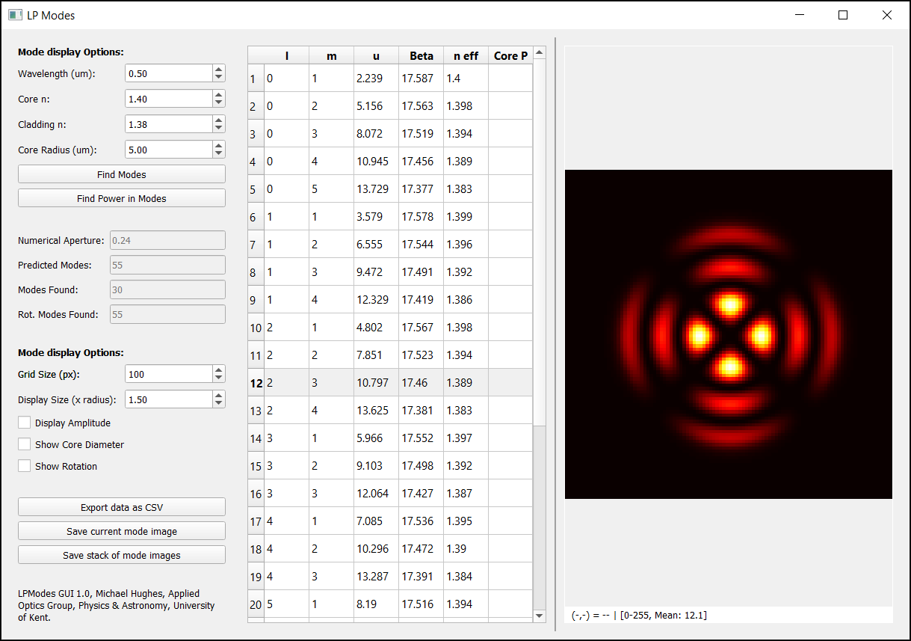

Using the GUI
The lpmodes_gui.py is a Graphical User Interface (GUI) for interacting with the lpmodes package. The GUI is based on PyQT5. Modes are displayed using the ImageDisplayQT widget.
{kind=link}
If you have installed via pip, you should be able to run:
python -m lpmodes_gui.py
from anywhere. If you have downloaded from github, lpmodes_gui.py is in the src folder.
Parameters of the fibre (NAs, core radius) and wavelength are defined in the top left. Clicking ‘Find Modes’ then finds solutions. The table in the centre is updated with the mode details. Power in core is not calculated immediately as this is more time consuming, click ‘Find Power in Core’ button to update this. Select a line of the table to display an image of that mode on the right. There are options on the left to choose the image grid size, the physical size of the image as a multiple of the core size, whether to display the amplitude or the intensity, and whether to display a circle showing the core size. The data can be exported as CSV, or the current mode image or all mode images saved as tifs using buttons on the left.